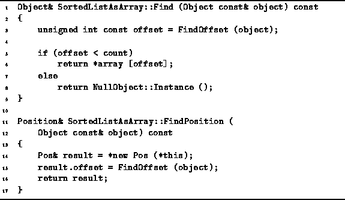

Data Structures and Algorithms
with Object-Oriented Design Patterns in C++
Data Structures and Algorithms
with Object-Oriented Design Patterns in C++
Program  defines the two public member functions
of the SortedListAsArray class used to locate items in a sorted list.
Both of these functions make use of the FindOffset member function
described above.
defines the two public member functions
of the SortedListAsArray class used to locate items in a sorted list.
Both of these functions make use of the FindOffset member function
described above.

Program: SortedListAsArray Class Find and FindPosition Member Function Definitions
The Find member function takes a const reference
to an Object and returns a reference to the object contained
in the sorted list which matches (i.e., compares equal to) its argument.
It calls FindOffset to determine by doing a binary search
the array index at which the matching object is found.
Find returns a reference to the matching object, if one is found;
otherwise, it returns a reference to the NullObject instance.
The total running time of Find is dominated by FindOffset.
Therefore, the running time is  .
.
The FindPosition member function also takes a const reference an Object, but it returns a reference to a Position instead. FindPosition determines the position in the array of an object which matches its second argument.
The implementation of FindPosition is trivial:
It calls FindOffset to determine
the position at which the matching object is found and returns this position.
The total running time of FindPosition is dominated by FindOffset.
Therefore like Find,
the running time of FindPosition is  .
.
 Copyright © 1997 by Bruno R. Preiss, P.Eng. All rights reserved.
Copyright © 1997 by Bruno R. Preiss, P.Eng. All rights reserved.